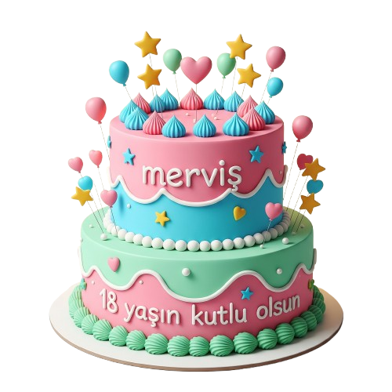

Doğum günün kutlu olsun gız
Doğum günün kutlu olsun! Kaç aydır söylendiğin doğum günün geldi, Umarım her şey gönlünce olur, iyi ki varsın. (Artık bir ehliyet alıp gezdirirsin asdasdnmkaj🥰)
Doğum günün kutlu olsun! Kaç aydır söylendiğin doğum günün geldi, Umarım her şey gönlünce olur, iyi ki varsın. (Artık bir ehliyet alıp gezdirirsin asdasdnmkaj🥰)